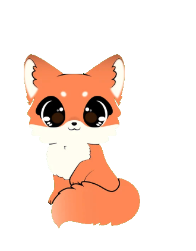

IL TUO ANIMALE DIGITALE
Ogni giorno
un po’ più grande.
Prenditi cura di Miso, ascolta di cosa ha bisogno e costruite insieme una piccola routine.
oggi sta bene ↗
modalità gioco ON

Miso •
si sente amato
tocca Miso per coccolarlo
COME STA
Le sue necessità
MalattiaMiso non si sente bene
UN GESTO ALLA VOLTA
Prenditene cura
Miso aspetta il prossimo gesto gentile.
PICCOLO DIARIO